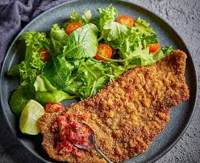

Milanesa recipe.

Description
Para esta receta vamos a batir unos huevos y mezclar con pan rallado
la carne que compramos, se recomienda pecceto, paleta o, en todo caso, pollo.
Ingredients
- Huevos 3unid.
- Pan rallado
- 1kg de Carne
- Aceite
- Condimento para carne/pollo
Steps
- Poner dos a tres huevos por kilo de carne en un bol y batir
agregando el condimento para carne o para pollo, tambien puede ser
condimento para milanesa.
- Agregar la carne al bol y mezclarla.(Se recomienda dejar repozar
una hora).
- Poner en una fuente el pan rallado e ir empanando la milanesa una
por una(poniendo la carne en el pan vuelta y vuelta, apretando para
que se pegue).
- En una sarten poner aceite y dejar calentar, probando la temperatura
poniendo un poco de pan rallado en el aceite. Una vez caliente ir poniendo
las milanesas ya empanadas.
- Una vez doradas las dos caras de la milanesa sacarla y envolverla en
servilleta para que absorda el excedente de aceite.
- (Opcional). Para sacar el excedente de aceite tambien se puede hervir
agua en una olla y al sacar la milanesa sumergirla por no mas de 1segundo
en la olla de agua y sacarla.Se debe hacer con mucha rapidez para que no
absorba el agua.
Home